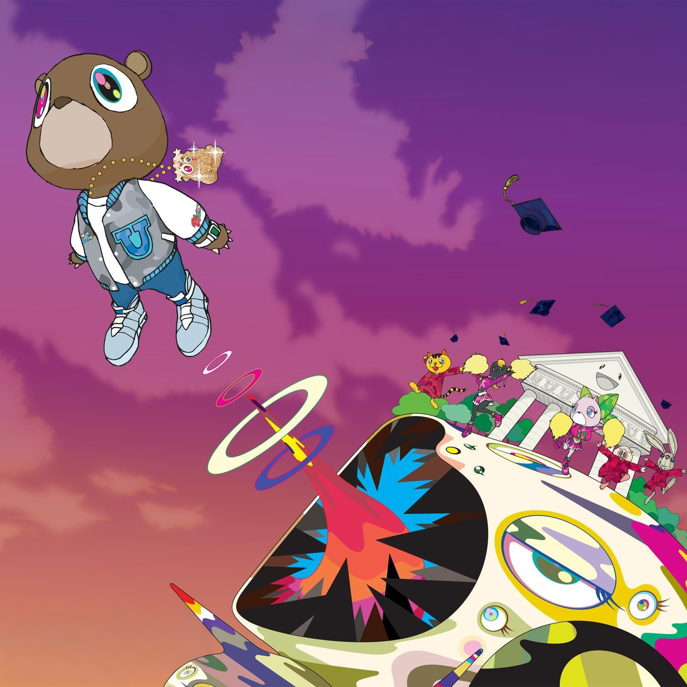
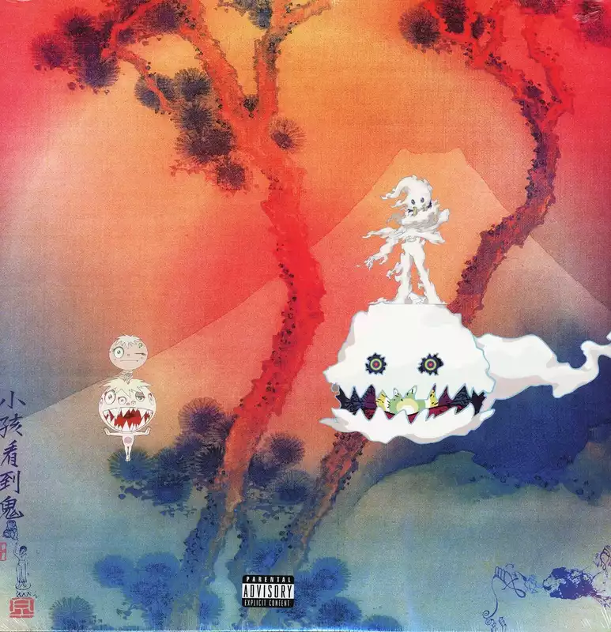

Takashi Murakami x Kanye West Artworks
Graduation Cover Art

- This artwork was created by Takashi Murakami for Kanye's 2007 album "Graduation"
- It represents the rapper Kanye West as a bear, when he finally graduated from his college
- The album was released in 2007 and the cover was made in 2006
The artwork for Kanye West's Graduation album was created in 2007 by Japanese contemporary artist
Takashi Murakami, coinciding with the album's release that same year. Murakami's distinctive style
is featured prominently in the cover art, which was a significant cultural moment in music.
Graduation Image Source
Kids See Ghosts Cover Art

- This artwork was created by Takashi Murakami for Kanye's 2018 album "Kids See Ghosts"
- The cover is a modernized version of Murakami's 2001 woodblock print "Mani Fuji"
- The cover showcases Murakami's "superflat" style, a blend of traditional Japanese art (like Nihonga)
and contemporary pop art.
The Kids See Ghosts album cover is an artwork by Takashi Murakami, featuring a vibrant, psychedelic landscape
inspired by Hokusai's traditional Japanese woodblock print "Mani Fuji". Key elements include a Mount Fuji
backdrop, Murakami's trademark "Oval Characters" confronting the viewer, and Chinese characters translating
to "Chaos".
Kids See Ghosts Image Source
MBDTF Cover Art

- This artwork is one of the 8 artworks designed for Kanye's album MBDTF.
- The cover shows West being straddled on a couch by an armless winged female,
who has fearsome features and a long, spotted tail.
- It was designed on 10 October, 2010.
The various covers explore themes of celebrity, fame, and Kanye's self-reflection on
how it has shaped him, including both the excesses and downfalls of notoriety.
The album's art reflects its maximalist production and opulent aesthetic, with influences
from classical art, surrealism, and cubism.
My Beautiful Dark Twisted Fantasy Image Source
Steps to create your own art
- To create art like Takashi Murakami, begin by designing characters with distinctive, simple eyes and smiles.
- incorporate surreal, flower-like aesthetic with vibrant colors and bold, clean lines.
- Develop your skills in mixing colors, creating clean outlines, and applying a flat, superflat style to your drawings
paintings, or even 3D sculptures to mimic his signature look.
Materials Used
- paper (scrap paper piece too to catch the marker bleeding on that step)
- pencil / sharpie to trace
- pencil-colors (Crayon/marker/paint/colored pencil/etc)
Artworks Comparison
| Artwork |
Year of Creation |
| Graduation |
2006 |
| Kids See Ghosts |
2018 |
| MBDTF |
2010 |